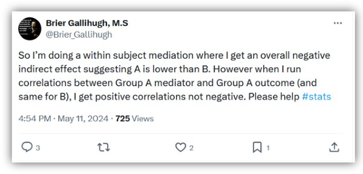
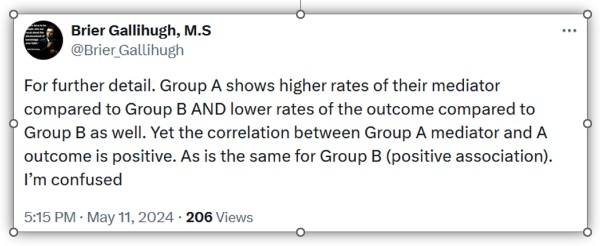
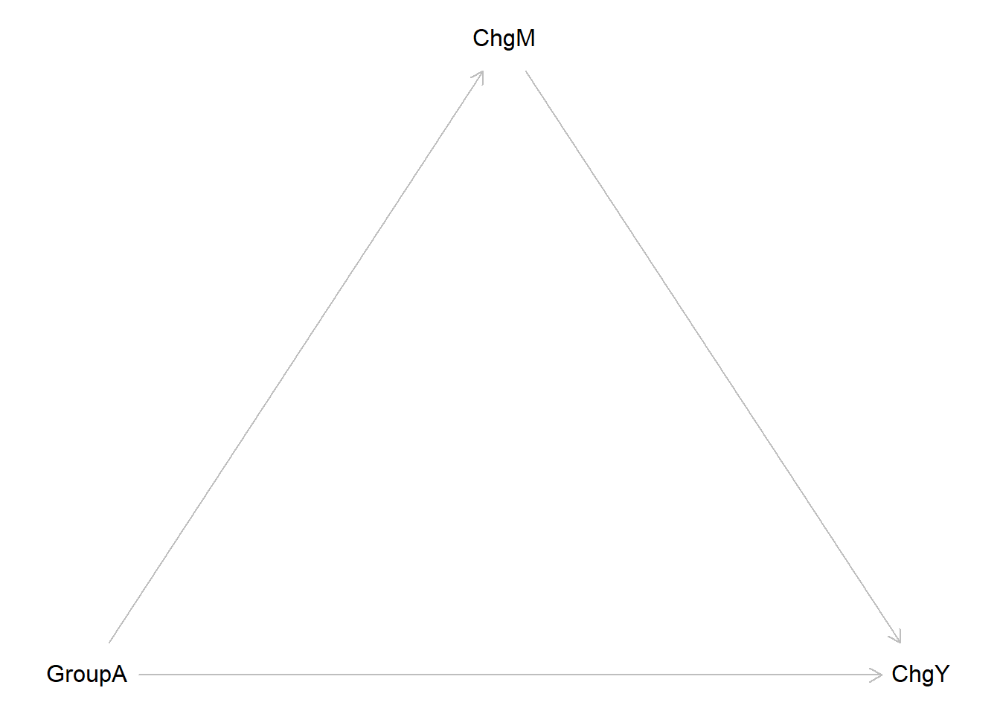
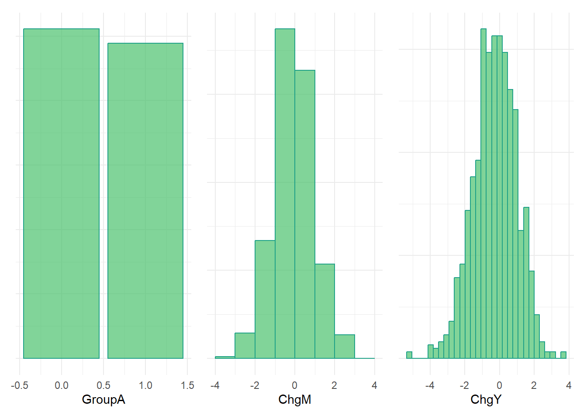
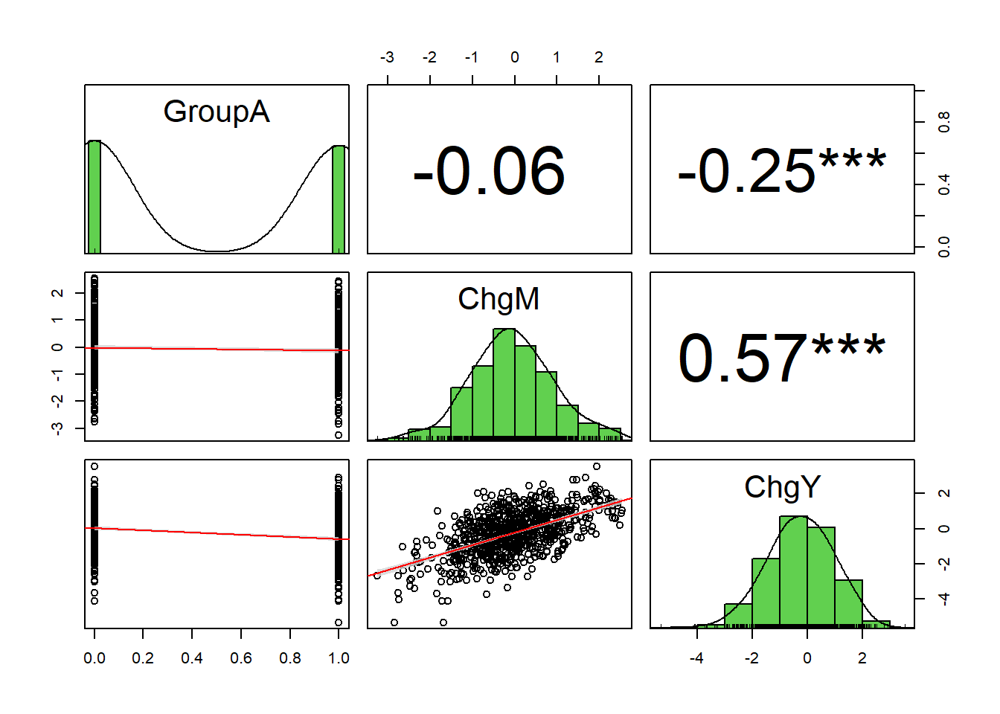
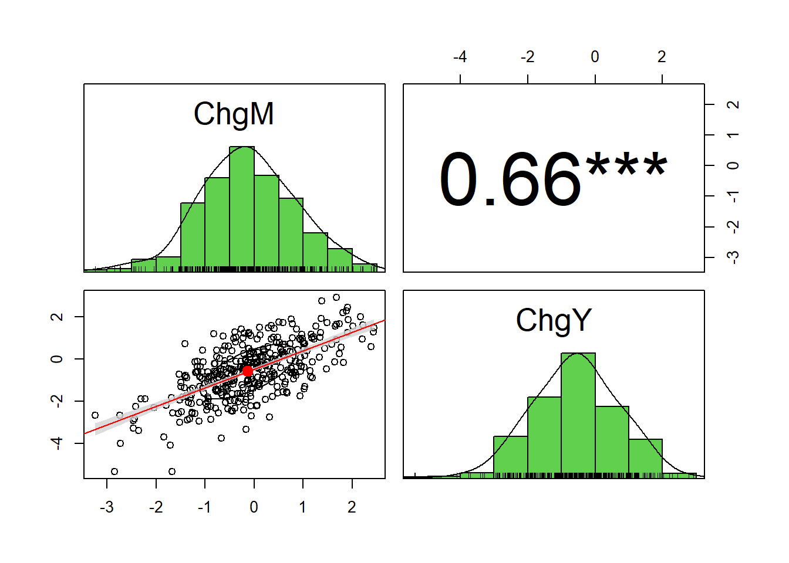
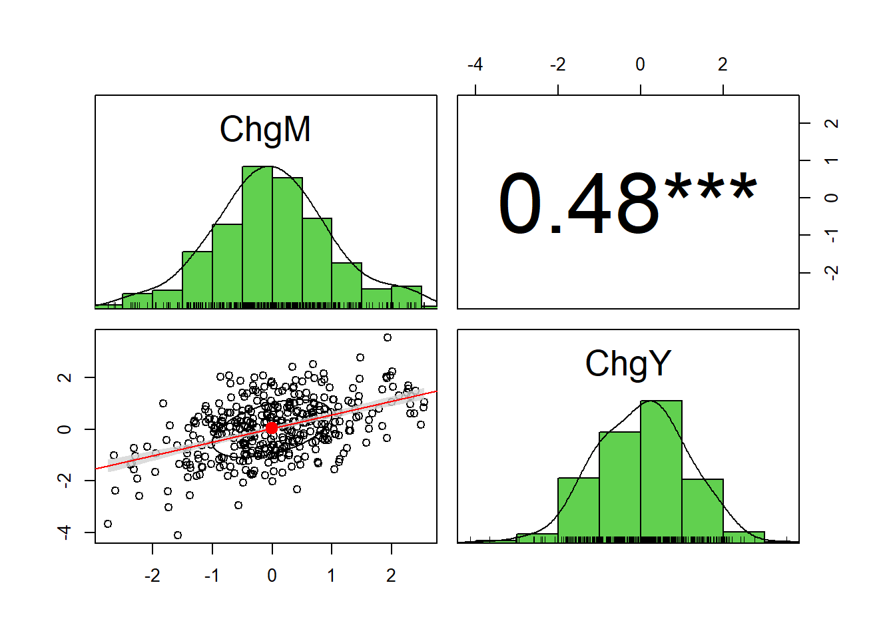
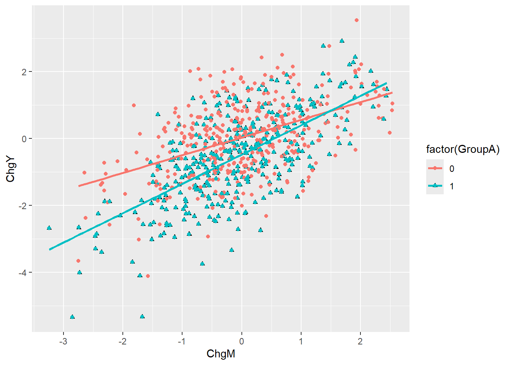
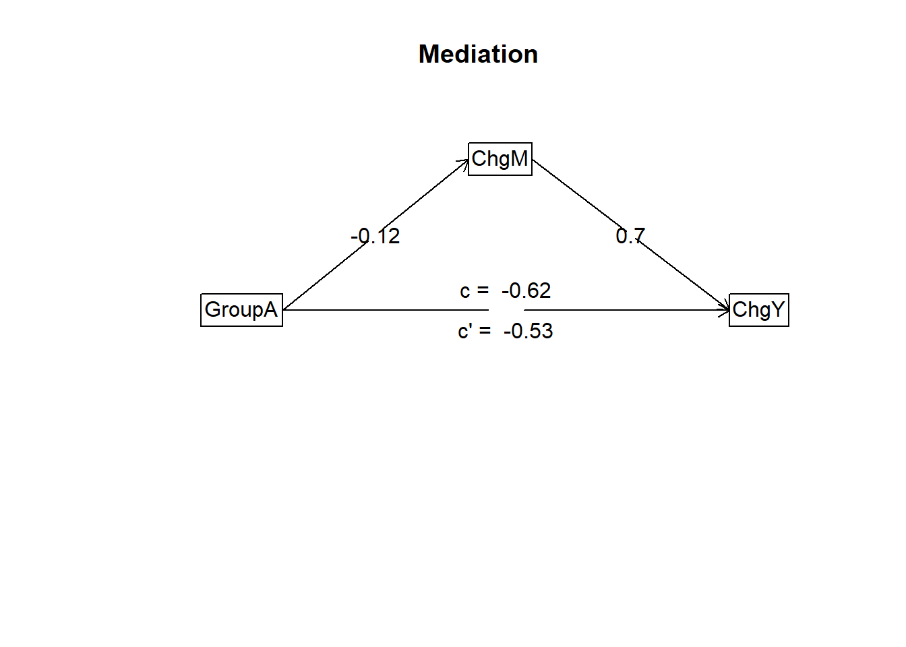

Show code
library(tidyverse)
library(ggplot2)
library(patchwork)
library(psych)
# library(devtools)
# install_github("jtextor/dagitty/r")
library(dagitty)
library(CMAverse)
At times, we find ourselves wanting to publish a brief or “quick hitting” entry with a brief comment or coding example but do not have the time for a formal blog post. So, we decided to pilot a new type of entry. For lack of a better term, we’ll call this a “Reluctantly Rapid Response” (RRR for short). We are generally reluctant to post anything and doubly reluctant to post anything rapidly, so the name seems fitting to us.
This RRR entry provides code and output from a simple simulation motivated by Brier Gallihugh’s question on X about a mediation issue.

The following simulation, plots, and analysis provide one example situation in which changes in a mediator (ChgM) are positively correlated with changes in an outcome (ChgY) within two groups A & B, yet Group A membership is estimated as having a negative indirect effect on changes in the outcome (ChgY) via changes in the mediator (ChgM). In this example, the total negative indirect effect is generated by a small negative “pure” indirect (PNIE) effect combined with a small “mediated interaction” (INTmed) effect.
I am not claiming that this is what is happening in the original poster’s (BG’s) data. In fact, one apparent and important difference is that BG stated in a later tweet that “Group A shows higher rates of their mediator compared to Group B AND lower rates of the outcome compared to Group B as well.”

If “rates” refer to initial status at Time 1 (not changes), then perhaps we could generate comparable data. Yet, if “rates” refers to the change scores themselves, then it seems we may still have an unsolved problem on our hands. In the simulation below, changes in the mediator are positively correlated with changes in the outcome in both Groups A and B, and Group A has lower outcome change scores on average; however, specification of marginally lower mediator change scores on average for Group A contribute to the negative indirect effect estimates.
Please feel free to reach out on X or via email if you see errors or have other suggestions!
library(tidyverse)
library(ggplot2)
library(patchwork)
library(psych)
# library(devtools)
# install_github("jtextor/dagitty/r")
library(dagitty)
library(CMAverse)SimpsonDAG <- dagitty("dag{
GroupA -> ChgM -> ChgY
GroupA -> ChgY
}")
coordinates(SimpsonDAG) <- list(
x=c(GroupA=1, ChgM=2, ChgY=3),
y=c(GroupA=2, ChgM=1, ChgY=2) )
plot(SimpsonDAG)
set.seed(1138)
n <- 500
GroupA<-rbinom(n=1000,size=1,prob=0.50)
ChgM <- -.1*GroupA + rnorm(n)
ChgY <- .5*ChgM + -.5*GroupA + .4*GroupA*ChgM + rnorm(n)
simdata <- tibble(GroupA, ChgM, ChgY)
simdata# A tibble: 1,000 × 3
GroupA ChgM ChgY
<int> <dbl> <dbl>
1 0 -0.358 0.687
2 0 -0.490 -2.07
3 0 -0.115 0.895
4 1 -0.451 -1.65
5 1 -0.588 -1.31
6 0 -0.961 0.371
7 1 -0.732 -1.51
8 1 0.294 -0.344
9 0 -0.249 0.0797
10 1 -2.42 -2.25
# ℹ 990 more rowsGroupAplot <- simdata %>% ggplot() +
geom_bar(aes(x=GroupA),
color="#1fa187", fill="#4ac16d", alpha=.7,
position="identity") +
theme_minimal() +
theme(axis.text.y=element_blank(),
axis.ticks.y=element_blank()
) +
labs(x="GroupA", y=NULL)
ChgMplot <- simdata %>% ggplot() +
geom_histogram(aes(x=ChgM, y=..density..),
color="#1fa187", fill="#4ac16d", alpha=.7,
position="identity",
breaks = seq(-4, 4, by = 1)) +
theme_minimal() +
theme(axis.text.y=element_blank(),
axis.ticks.y=element_blank()
) +
labs(x="ChgM", y=NULL)
ChgYplot <- simdata %>% ggplot() +
geom_histogram(aes(x=ChgY, y=..density..),
color="#1fa187", fill="#4ac16d", alpha=.7,
position="identity") +
theme_minimal() +
theme(axis.text.y=element_blank(),
axis.ticks.y=element_blank()
) +
labs(x="ChgY", y=NULL)
GroupAplot + ChgMplot + ChgYplot
Positive correlation between ChgM and ChgY in full sample.
pairs.panels(simdata,
smooth = FALSE, # If TRUE, draws loess smooths
scale = FALSE, # If TRUE, scales the correlation text font
density = TRUE, # If TRUE, adds density plots and histograms
ellipses = FALSE, # If TRUE, draws ellipses
method = "pearson", # Correlation method (also "spearman" or "kendall")
pch = 21, # pch symbol
lm = TRUE, # If TRUE, plots linear fit rather than the LOESS (smoothed) fit
cor = TRUE, # If TRUE, reports correlations
jiggle = FALSE, # If TRUE, data points are jittered
factor = 2, # Jittering factor
hist.col = 3, # Histograms color
stars = TRUE, # If TRUE, adds significance level with stars
ci = TRUE) # If TRUE, adds confidence intervals
Positive correlation between ChgM and ChgY within Group A.
simdataA <- simdata %>% filter(GroupA==1) %>% select(-GroupA)
pairs.panels(simdataA, density = TRUE, method = "pearson", pch = 21,
lm = TRUE, cor = TRUE, hist.col = 3, stars = TRUE, ci = TRUE) 
Positive correlation between ChgM and ChgY within Group B.
simdataB <- simdata %>% filter(GroupA==0) %>% select(-GroupA)
pairs.panels(simdataB, density = TRUE, method = "pearson", pch = 21,
lm = TRUE, cor = TRUE, hist.col = 3, stars = TRUE, ci = TRUE) 
Notice inconsistent or heterogeneous effect of ChgM on ChgY across Groups.
ggplot(data = simdata, aes(x = ChgM, y = ChgY)) +
geom_point(aes(shape = factor(GroupA))) +
geom_point(aes(color = factor(GroupA))) +
geom_smooth(method = "lm",
se = FALSE,
aes(color = factor(GroupA))) 
Negative indirect effect of GroupA on ChgY via ChgM.
mediate(ChgY ~ GroupA + (ChgM), data = simdata, n.iter = 10000) %>% print(short = TRUE)
Mediation/Moderation Analysis
Call: mediate(y = ChgY ~ GroupA + (ChgM), data = simdata, n.iter = 10000)
The DV (Y) was ChgY . The IV (X) was GroupA . The mediating variable(s) = ChgM .
Total effect(c) of GroupA on ChgY = -0.62 S.E. = 0.08 t = -8.07 df= 998 with p = 2e-15
Direct effect (c') of GroupA on ChgY removing ChgM = -0.53 S.E. = 0.06 t = -8.47 df= 997 with p = 8.5e-17
Indirect effect (ab) of GroupA on ChgY through ChgM = -0.08
Mean bootstrapped indirect effect = -0.08 with standard error = 0.04 Lower CI = -0.17 Upper CI = 0
R = 0.61 R2 = 0.37 F = 289.17 on 2 and 997 DF p-value: 5.13e-135
To see the longer output, specify short = FALSE in the print statement or ask for the summaryTotal negative indirect effect (PNIE + INTmed) estimate is larger after accounting for exposure-mediator interaction.
set.seed(1138)
est <- cmest(data = simdata, model = "rb", outcome = "ChgY", exposure = "GroupA",
mediator = "ChgM", EMint = TRUE,
mreg = list("linear"), yreg = "linear",
astar = 0, a = 1, mval = list(0),
estimation = "imputation", inference = "bootstrap", nboot = 20)
|
| | 0%
|
|==== | 5%
|
|======= | 10%
|
|========== | 15%
|
|============== | 20%
|
|================== | 25%
|
|===================== | 30%
|
|======================== | 35%
|
|============================ | 40%
|
|================================ | 45%
|
|=================================== | 50%
|
|====================================== | 55%
|
|========================================== | 60%
|
|============================================== | 65%
|
|================================================= | 70%
|
|==================================================== | 75%
|
|======================================================== | 80%
|
|============================================================ | 85%
|
|=============================================================== | 90%
|
|================================================================== | 95%
|
|======================================================================| 100%summary(est)Causal Mediation Analysis
# Outcome regression:
Call:
glm(formula = ChgY ~ GroupA + ChgM + GroupA * ChgM, family = gaussian(),
data = getCall(x$reg.output$yreg)$data, weights = getCall(x$reg.output$yreg)$weights)
Coefficients:
Estimate Std. Error t value Pr(>|t|)
(Intercept) 0.03308 0.04337 0.763 0.446
GroupA -0.51010 0.06229 -8.190 7.97e-16 ***
ChgM 0.53021 0.04329 12.248 < 2e-16 ***
GroupA:ChgM 0.34764 0.06259 5.554 3.58e-08 ***
---
Signif. codes: 0 '***' 0.001 '**' 0.01 '*' 0.05 '.' 0.1 ' ' 1
(Dispersion parameter for gaussian family taken to be 0.9610836)
Null deviance: 1559.35 on 999 degrees of freedom
Residual deviance: 957.24 on 996 degrees of freedom
AIC: 2804.2
Number of Fisher Scoring iterations: 2
# Mediator regressions:
Call:
glm(formula = ChgM ~ GroupA, family = gaussian(), data = getCall(x$reg.output$mreg[[1L]])$data,
weights = getCall(x$reg.output$mreg[[1L]])$weights)
Coefficients:
Estimate Std. Error t value Pr(>|t|)
(Intercept) -0.006556 0.043905 -0.149 0.8813
GroupA -0.120841 0.062786 -1.925 0.0546 .
---
Signif. codes: 0 '***' 0.001 '**' 0.01 '*' 0.05 '.' 0.1 ' ' 1
(Dispersion parameter for gaussian family taken to be 0.9850333)
Null deviance: 986.71 on 999 degrees of freedom
Residual deviance: 983.06 on 998 degrees of freedom
AIC: 2826.8
Number of Fisher Scoring iterations: 2
# Effect decomposition on the mean difference scale via the regression-based approach
Direct counterfactual imputation estimation with
bootstrap standard errors, percentile confidence intervals and p-values
Estimate Std.error 95% CIL 95% CIU P.val
cde -0.510101 0.073753 -0.651063 -0.410 <2e-16 ***
pnde -0.514441 0.074196 -0.638106 -0.410 <2e-16 ***
tnde -0.556449 0.076406 -0.692366 -0.431 <2e-16 ***
pnie -0.064071 0.034397 -0.126845 -0.011 <2e-16 ***
tnie -0.106080 0.056820 -0.194148 -0.019 <2e-16 ***
te -0.620520 0.089392 -0.778236 -0.465 <2e-16 ***
intref -0.004339 0.015854 -0.029367 0.025 0.8
intmed -0.042009 0.025189 -0.095535 -0.008 <2e-16 ***
cde(prop) 0.822054 0.068527 0.730253 0.935 <2e-16 ***
intref(prop) 0.006993 0.025298 -0.042487 0.047 0.8
intmed(prop) 0.067700 0.035646 0.017009 0.143 <2e-16 ***
pnie(prop) 0.103254 0.047652 0.021586 0.183 <2e-16 ***
pm 0.170953 0.078667 0.038596 0.283 <2e-16 ***
int 0.074693 0.031196 0.022878 0.120 <2e-16 ***
pe 0.177946 0.068527 0.064943 0.270 <2e-16 ***
---
Signif. codes: 0 '***' 0.001 '**' 0.01 '*' 0.05 '.' 0.1 ' ' 1
(cde: controlled direct effect; pnde: pure natural direct effect; tnde: total natural direct effect; pnie: pure natural indirect effect; tnie: total natural indirect effect; te: total effect; intref: reference interaction; intmed: mediated interaction; cde(prop): proportion cde; intref(prop): proportion intref; intmed(prop): proportion intmed; pnie(prop): proportion pnie; pm: overall proportion mediated; int: overall proportion attributable to interaction; pe: overall proportion eliminated)
Relevant variable values:
$a
[1] 1
$astar
[1] 0
$mval
$mval[[1]]
[1] 0@online{brauer2024,
author = {Brauer, Jon},
title = {RRR: {Mediation} {Makes} {My} {Head} {Hurt!}},
date = {2024-05-13},
url = {https://reluctantcriminologists.com/blog-posts/[4]/causation-no-corr.html},
langid = {en}
}